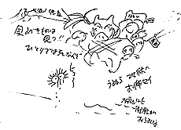

97.1.06（月）
仕事始め。
一昨日、夜11時30分ついに「もののけ姫」の絵コンテが完成。と思ったら、一晩考えて昨日一部修正し本当の完成。因みに昨日1月5日は監督56歳の誕生日。「55歳のうちに完成させたかった」は宮崎監督のコメント。
朝から絵コンテのコピーを始めるが、コピーの調子が悪く思うように進まない。昼前、ついにコピーがクラッシュ、修理屋さんを呼ぶ。もののけのタタリか。
完成した絵コンテをもとに各CUT最新の秒数をまとめ、総尺数を出してみたところ、なんと130分を越えてしまった。エンディングを入れずにである。ひえー、鈴木プロデューサーになんと報告しよう…。
97.1.07（火）
総尺数を鈴木プロデューサーに報告。頭を抱えている。こちらは制作チーフ川端氏と共にとりあえず、制作のスケジュールの最終決定と、音響スケジュールの検討を始める。
97.1.8（水）
鈴木プロデューサーが宮崎監督に「絵コンテあれでいいんですか」といきなり切り出した。「やはりエボシはやはり…云々、アシタカが…云々」とたたみかけるような攻撃が続く。宮崎監督は、しばし考えた後「もうちょっとうまく物語を終わらせる方法が見つかった」とコンテ改変を宣言。さてどうなるやら。
|
 ある日のラクガキ |
97.1.10（金）
宮崎監督のコンテ改変が進行中だが、どうも尺とCUT数が増えているらしい。「プロデューサーがＯＫしたからいいのだ」と言っているが、これ以上増えるとスケジュールが…。
宮崎監督から「増えた分のレイアウトを描くから、15CUT位できるアニメーターを探してくれ」と指示がある。早速以前からジブリ作品を手伝ってもらっているＩ氏に連絡をとる。
Ｉ氏と自宅近くのファミリーレストランで会う。「いやー時間が無くて…」とか「とても他の作品を描きながらできる仕事ではない」等、なかなかガードは硬い。とにかく担当部分の絵コンテを見てから決めるということなので、宮崎監督に催促。
監督のコンテラフ完成。Ｉ氏攻略のため、明日ラフコンテを見せる際、宮崎監督も同行することに。もちろんＩ氏には内緒。
97.1.11（土）
宮崎監督から、どうしても社内では振り分けられそうもない原画について、Ｉ氏以外にも、「一人５CUTずつでもいいから声をかけろ」と指示が出る。
宮崎監督とＩ氏に会いに行く。突然会いに来た監督にメチャクチャ困った顔をしていたが、なんとか12CUT描いてくれることに。Ｉ氏に「一生恨む」と何度も言われる。
今日の夜に金田伊功氏に会いに行く約束を取りつけたところ、気の短い宮崎監督は直接TEL、原画を描いてもらうことに。
Ｔ氏に連絡。「内容を見てから」と言ってはいるが、なんとかやってくれそう。月曜日に待ち合わせてコンテとキャラ表を渡すことに。
制作川端、西桐が、スタジオノンマルトを訪問、金田氏に絵コンテ、キャラ表を手渡す。来週中に作打ちに来社。
97.1.13（月）
朝っぱらからひょんなことで宮崎監督の怒りが爆発、あるベテランスタッフが怒鳴られる。恐かったけど社内の緊張感は確実にアップ。
Ｔ氏にTEL。作打ちを15日（祝）の15時からに決定。
97.1.14（火）
スタジオロビン、ＯＺからマシンの出が今一歩との連絡が会ったため、マシンメンテナンスのプロ村尾さんに２社のマシンを改造修理してもらう。
宮崎監督が、「自分の担当が終わりそうもない原画は自主的に何とかせよ 後から上がりませんといってもゆるされない」とのポスターを張り出す。休日出勤もやむを得ないか。
97.1.15（水）
３時からＴ氏の打ち合わせ。CUT1,579～1,589まで12CUT。約束よりかなり多いCUT数になってしまい、またしても恨まれる。
4時から急遽決まった助っ人Ａ氏の打ち合わせ。1,611～1,619まで９CUTの予定。
7時半よりまたまたピザや高坂氏の作ったパスタの夕食あり。35人がこの食事にありつく。
97.1.16（木）
宮崎監督が突如、Ｃパートの冒頭50CUTをＡＢパートのカッティングに加えたいと提案。ここはセルは上がっているが、黒田氏の背景がまだ20CUTほど残っている。急遽美術で会議を持ち、黒田、吉田、山本、田中夫妻、平原の６人で手分けして作業することに。
Ｋ君が３カ月ぶりの原画を上げる。いくら新人とはいえ遅すぎる。宮崎監督もさすがに我慢の限界まできていたのかＫ君に説教。
明日の若林さん来社に向けて、川端氏と仮の音響スケジュールを立てる。
稲村氏の打ち合わせ。CUT1,651～1,660まで10CUT。
97.1.17（金）
朝からスタッフの健康診断。宮崎監督も鈴木プロデューサーも「どうせ不健康だから」と診断を拒否。
金田さんからTEL。打ち合わせは明日16時から。
若林さん、伊藤さん、井上さんらが来社。キャスティングと音響スケジュールの打ち合わせ。
97.1.18（土）
Ｃパート冒頭の背景は、来週木曜日にはある程度目処が立つ予定。
クロマカラーから絵の具が到着。
金田氏来社、打ち合わせを行う。CUT1,590～1,601まで12CUT。５CUT位とお願いしていたので、またしても嘘をついてしまった。しかし金田氏がいるだけで社内が妙に元気になるのは気のせいか。今回は外で仕事をするが、追い込み時に社内にいてくれると本当はありがたい。
97.1.20（月）
デュプロに雨セル用の白カーボンを400枚ほど注文。ジブリにストックしてあった白カーボンが、時間が立ちすぎて写りが悪くなった為。
CUT45をイマジカに持ち込み。今日夜8時上がりで回収した後、デジタル合成の作業に入る。
ぎりぎりにならならいと上がらないと言っていた、福留君が特効作業をしているCUT82が突然上がってきた。このCUTはデジタル合成のCUTで、合成用に撮ったセル部分のみのフィルムでカッティングを凌ごうと思っていたが、奥井さんと相談し、間に合えば本撮でカッティングに入れ込むことに。ラッキー。
効果の伊藤さん来社。作ってきたヤックル、コダマ、タタラ、石火矢、刀などの音を宮崎監督に聞いてもらう。
97.1.21（火）
カッティングに間に合わせるために急がせていた特殊効果だが、思いの外早く進行している。問題だったCUT４も明日明るいうちに上がる予定。
宮崎監督が酒粕を買ってきたので、原画の森友さんが甘酒を作り社内に配る。
97.1.22（水）
Ｉ氏のレイアウトが５CUT分完成し、自宅に届けに行く。内容について「えらく面倒くさくなってしまった」と宮崎監督。ひえ～また恨まれる。そのかわり１CUT欠番に。
インターネット用に、撮影部古城君が使わなくなっていたデジタルカメラを借りる。
97.1.23（木）
CUT１の進行状況について男鹿さんにTEL。なんとか月曜日朝11時までに上げたいとの返事。カッティングまでぎりぎり間に合うか。
午後６時のニュースでバンダイ、セガ合併のニュースが流されると、社内はその話題で持ちきりに。野崎さんが早速バンダイへ電話し情報収集。しかし新社名が「セガバンダイ」とはあまりに………。
今週も動画上がりが少ない。
97.1.24（金）
宮崎監督が朝から鍼へ行く。
外部の動画スタジオから、原画の桑名君が３カ月もかけて描いた原画の１枚が入っていないとTELあり。探すが結局見つからず、残っているラフを元に桑名君が描きなおすことに。さて何時間かかるか。
97.1.25（土）
ラッシュが行われる。ＡＢパートのカッティング前なので約10分と今まで最長のラッシュとなる。
テレビマンユニオン浦谷さん来社。取材。
テレコム竹内さんが、ワーナーのアニメーションスタジオの人12名をつれて来社。野中さんが社内を案内して回る。
T氏の初原画アップ。
原画の残りCUTが300CUTを割り、先が見え始める。
97.1.26（日）
宮崎監督が午後一に出社するも、１時すぎまで作画で出社したのはゼロ。夕方になって原画がぱらぱら出社してきたものの、一番の危機動画部門はゼロ。男鹿さんのCUT１の背景直しが予定より12時間ほど早く上がる。大塚君が回収。
97.1.27（日）
大谷さん打ち合わせ。CUT1,628～1,638の11CUT。
97.1.28（火）
ＣＧ部が朝までかかって仕上げたＡＢパートのデジタルカットを朝一でイマジカに入れる（居村君が８時出社）。
イマジカに入れたデジタルカットの上がりが、明日の4時頃になってしまう為、瀬山さんに相談し、カッティングの時間を5時すぎにずらしてもらう。宮崎監督にもそう報告。明日は、イマジカで4時にカウンター回収し、5時すぎにラッシュチェック、終わり次第瀬山さんにつなぎ込んでもらい、編集作業に入る予定。
明日夕方までに上げてもらう予定のフィルムをイマジカが10時になっても回収に来ないので、TELしてみたら、回収を忘れていたとの返事。急遽居村君にイマジカへ行ってもらう。
97.1.29（水）
完全に線撮りだと思っていたCUT76の特効が上がってくる。デジタル合成なので、完全なフィルムにはならないが、とりあえずキャラには色がつくので、ラボを７時に押さえ、持ち込むことに。と思ったら特効抜けが3枚あり、福留君に修正してもらっていたら、演助の伊藤君が急ぎと言い忘れて、福留君が昼食に出てしまった。よって特効上がりは３時の予定になる。撮影が果たして間に合うか。
上記のCUT76は結局線撮りでカッティングに臨むことに。宮崎監督曰く「線撮りが無いと編集の雰囲気が出ないから」
夕方瀬山さん来社。繋ぎ込みの後、ＡＢ＋Ｃの頭のラッシュを見る。終わった後、納得できる出来だったのか宮崎監督の機嫌がやけに良くなっている。
夜、宮崎監督が突然シューベルトに目覚める。「天才だ！」を連発しながら野崎氏に借りた弦楽四重奏「死と乙女」をメインスタッフルームで聞き続けている。
97.1.30（木）
朝から瀬山さんが来社し、カッティング作業。明日まで時間をくれと言っていたが、夜には終了。Ａパート28分40秒11コマ、ＢＣ１パート29分９秒、タイトル23秒の計58分12秒11コマ。
会議用資料作成の為、米沢さん、石光さんを巻き込み必死に原稿書き。マックでクォークを使うときれいにでき上がるが、時間はやけにかかる。
音響スケジュールに関して鈴木プロデューサーを含めて話し合いが持たれる。前回の音響作業から２年も立っているため忘れていることが多いことに気づく。たとえば、音響打ち合わせに音楽との関係。音楽の打ち合わせに音響は参加したか？ 音楽の打ち合わせに音響は参加したか？ 等基本的な事が思い出せない。
リテークCUTが整理されずに撮出し机に放置してあったの発覚、宮崎監督が朝から伊藤君に雷。
97.1.31（金）
11時半から１階バーにてＡＢパート及びＣパートの頭までのオール（パート？）ラッシュを行う。線撮りがたった２CUT！。上映後に宮崎監督から「これから絵コンテが上がらなかった事を棚に上げて、催促しまくるのでそのつもりで」と日曜返上の追い込み宣言あり。
ラッシュ後に宮崎監督から１CUT欠番の指示あり。CUT
定尺が出たラッシュをテレシネしてラッシュをオムニバスにまわす。
夜中に日本テレビの奥田さん等の差し入れあり。残っていたスタッフがお土産のチキンラーメンを作るため鍋の奪い合い。
| 次のページへ |
| 日誌索引へ戻る |
| 「もののけ姫」トップページへ戻る |